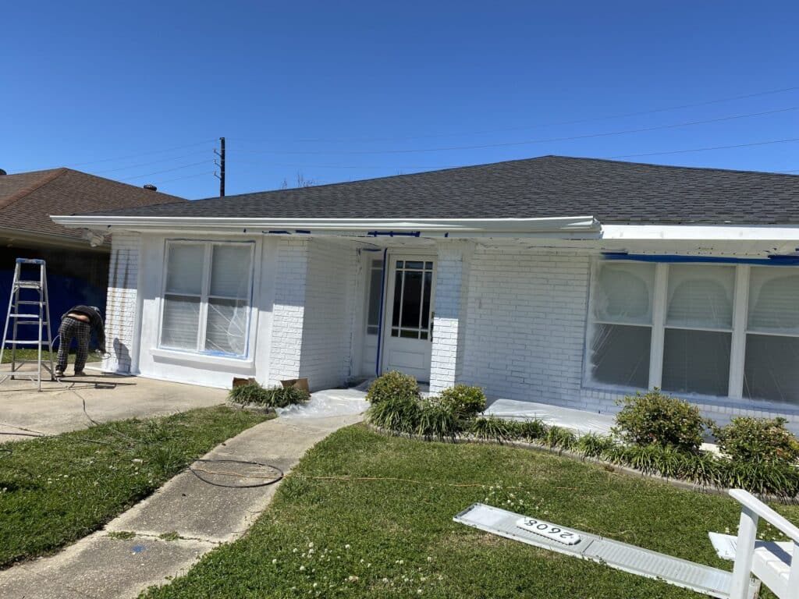
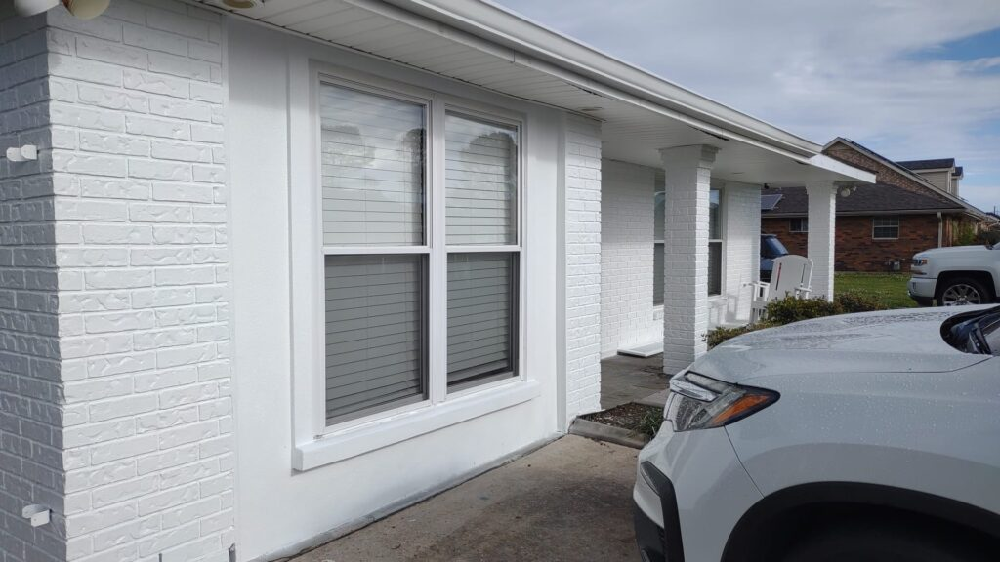
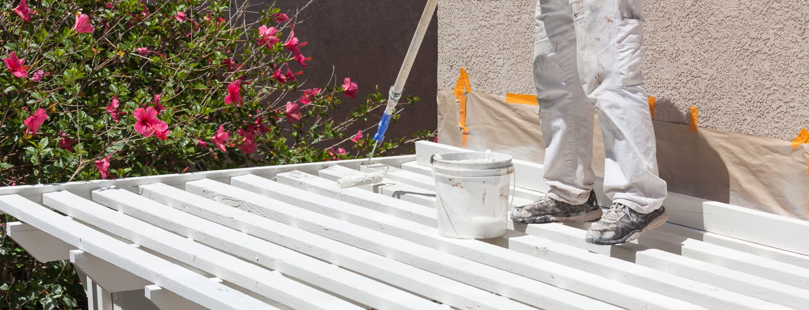
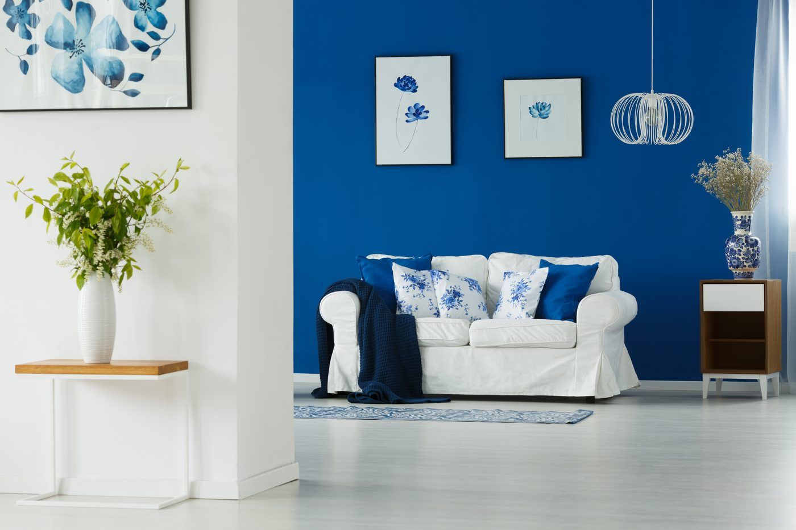
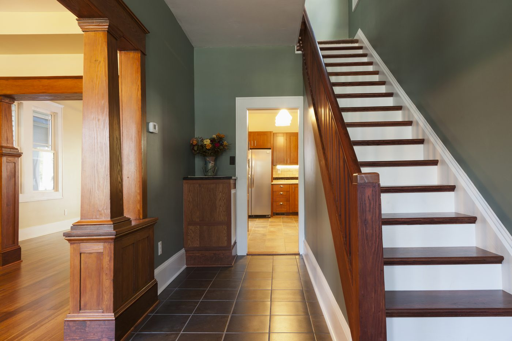
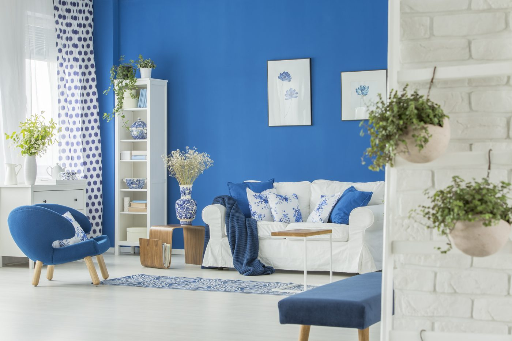
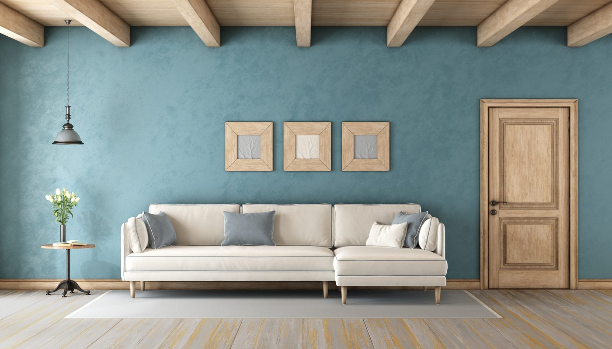
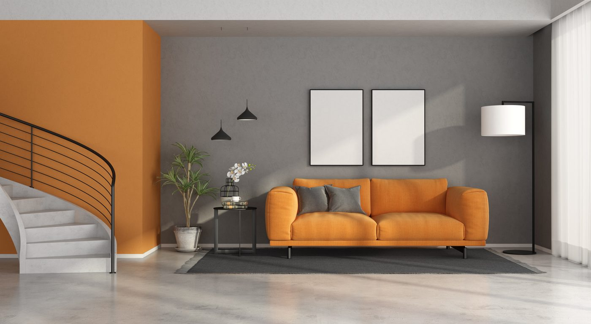
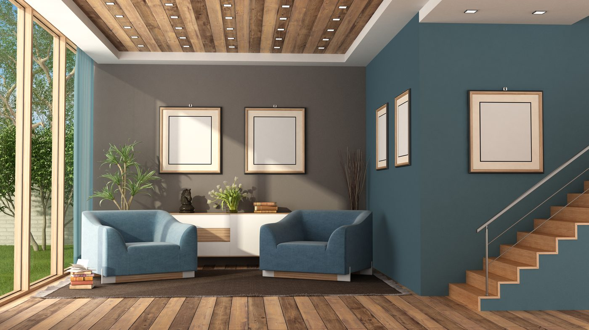

Painting contractor · Greater New Orleans
At Big Easy Painters, we handle interior and exterior house painting, cabinets, decks and commercial work across New Orleans and nine surrounding parish cities. We are licensed and insured in Louisiana, and every job starts with a free written estimate.
Bring a colour, or we help you pick one.
Services
We paint interiors, exteriors, cabinets and decks for New Orleans homes, plus offices, gyms, hospitals and schools for local businesses. Pressure washing and kitchen remodelling too, every job priced in writing before anyone opens a can.
Walls, ceilings, trim and doors, painted room by room. Furniture is covered and floors protected before the first coat goes on.
View service BEP 02 · Parish BluePrep, repair and weather-resistant coatings built for Gulf Coast humidity and sun. We wash and prime the surface first so the finish holds.
View service BEP 03 · Brick RowA refinished kitchen for a fraction of what a replacement costs. Doors come off, get sprayed, and go back on with a hard-wearing finish.
View service BEP 04 · Levee GoldCleaning, sanding and sealing so an outdoor space survives another Louisiana summer. We match the finish to the sun and foot traffic the deck takes.
View service BEP 05 · Storm VioletDirt, grime and mildew come off before any coating goes on. It is the step that decides whether the paint holds or peels.
View service BEP 06 · Live OakBeyond paint when the room needs more than a colour change. Coordinated as one job rather than three separate trades in your kitchen.
View serviceThe work
A full exterior repaint seals the surface against Gulf Coast humidity and rain, and lifts a tired property in a matter of days. The same New Orleans home, before and after our crew finished.


Before AfterWhy us
Because the price is agreed in writing before we start, the crews are local, and the property is left clean.
Fully covered in Louisiana, on every residential and commercial job.
Scope, preparation, product and price before we start. No verbal numbers.
Painters working across the parishes, so you meet the people who will be in your home.
Interiors, exteriors, cabinets and decks, plus offices, gyms, schools and clinics.
Washing, repair and priming happen first. It decides whether the finish lasts.
Furniture covered, floors protected, and the space left tidy when the last coat is on.
About
At Big Easy Painters, we take pride in providing top-notch residential painting services in the vibrant city of New Orleans. Our team of skilled and experienced painters is dedicated to transforming your home into a masterpiece, using high-quality materials and industry-standard techniques.
Our mission is to exceed our customers' expectations by delivering exceptional painting services with a focus on professionalism, attention to detail, and timely completion. We strive to create long-lasting relationships with our clients based on trust, reliability, and outstanding results.

Commercial
Yes. Offices, gyms, hospitals and schools, scheduled around your opening hours or into term breaks so your doors stay open.
Colour and finish chosen around your brand, applied after hours where needed.
View →Hard-wearing coatings for high-traffic floors, walls and locker areas.
View →Low-odour systems and calm palettes for clinical and patient-facing spaces.
View →Scheduled into term breaks so classrooms come back ready to use.
View →Facades, walkways and service areas cleaned before any coating goes on.
View → +Tell us the building and the timeline. We price it in writing.
View →Process
Four steps: you book a visit, we walk the property, you get a written estimate, then we paint and clean up. Nothing happens on your property without you knowing it is coming.
Call or send the form. We agree a time that works and confirm it.
We look at the actual surfaces and talk through colour.
Scope, prep, product and price, in writing. No verbal numbers.
Crews protect the space and leave it tidy when the last coat is on.
Reviews
Homeowners across the parishes on interior painting, deck work and cabinet refinishing.
Choosing Big Easy Painters as our painting contractor was easily the best decision we made for our renovation project.
They went above and beyond our expectations. They transformed our faded deck, making it look brand new.
We had our old kitchen cabinets painted and it is like we have a brand new kitchen now. The finish they achieved was amazing.
Recent work
Feature walls, trim, ceilings, stairwells and doors. These are the colour and finish jobs we take on across New Orleans homes.






Service areas
We cover New Orleans and nine surrounding parish cities. If we serve your address, we can be there for the estimate and the price comes back in writing.
Inside New Orleans itself we work across the Garden District, Uptown, Carrollton, Mid-City, Lakeview, Gentilly, Bywater, Marigny, Treme, the Irish Channel and Algiers, on everything from Creole cottages and shotgun doubles to new-build and commercial property.

Advice
Colour choices, lead paint in older homes, and getting a surface ready before the first coat.
Questions
What a free estimate covers, how long a job takes, and what happens with lead paint in an older home.
Ask for proof of licence and insurance, a written scope rather than a verbal number, and the name of the crew who will actually be on site. A contractor who prices without walking the property is guessing.
Yes. Commercial work is scheduled around your operating hours and usually calls for harder-wearing coatings and more surface preparation. The colour conversation is shorter; the logistics conversation is longer.
Clear small items off walls and surfaces, and let us know about pets, alarm codes and parking. We handle covering furniture, protecting floors and masking anything that stays put.
It depends on square footage, surface condition and the weather. Your written estimate carries the expected number of days for your specific property, agreed before we start.
We work on older properties across the parishes, including the historic districts. Homes built before 1978 may contain lead paint, and the EPA Lead Renovation, Repair and Painting Rule sets how painted surfaces in those homes must be disturbed. Tell us the age of the house when you book and we will cover it at the estimate.
A walk of the property, a conversation about colour and finish, and a written document setting out preparation, products, scope and price. There is no charge and no obligation to book.
Cost depends on square footage, the condition of the surfaces, how many coats are needed and whether repairs come first. We do not quote over the phone, because a number given without seeing the property is a guess. The free walk-through produces a written price for your specific job.
For most interior work, no. We paint room by room, cover furniture and protect floors, and agree with you each day which areas are in use. Larger exterior projects rarely affect how you live in the house at all.
Free estimate
Send the form and we will call to arrange a walk-through. If you would rather talk it through now, the phone is quicker.
We call to agree a time that suits you, and confirm it before the visit.
We walk the property, look at the actual surfaces and talk through colour.
You get scope, preparation, product and price in writing, with no obligation.
Serving New Orleans, Metairie, Kenner, Covington, Mandeville, Madisonville, Abita Springs, Hammond, LaPlace and St Rose.